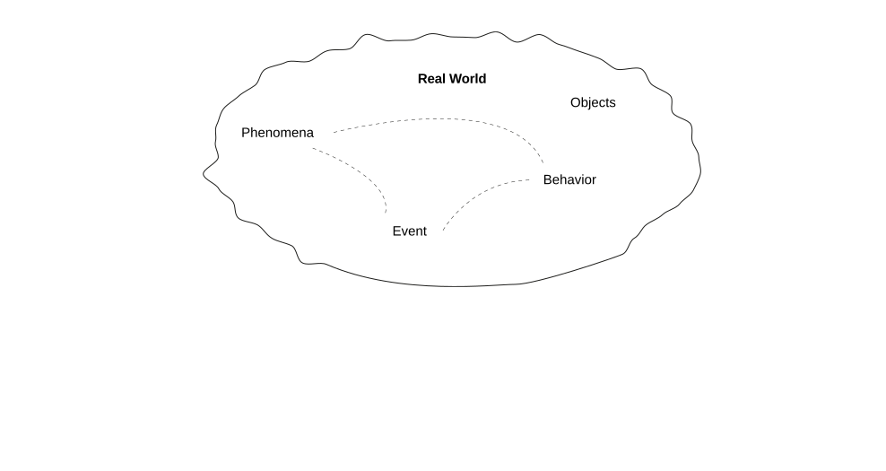
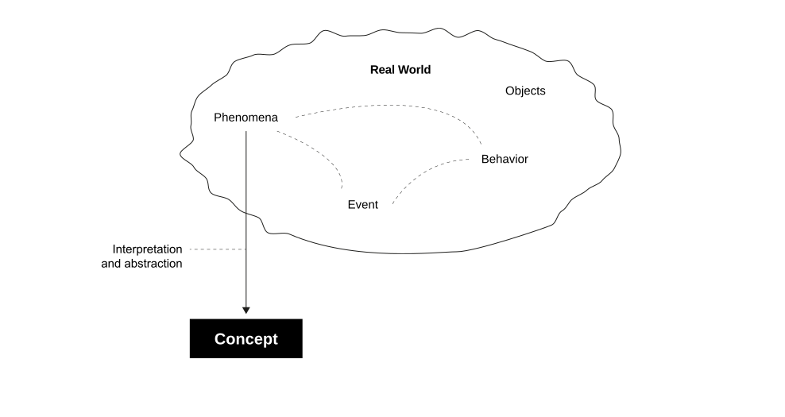
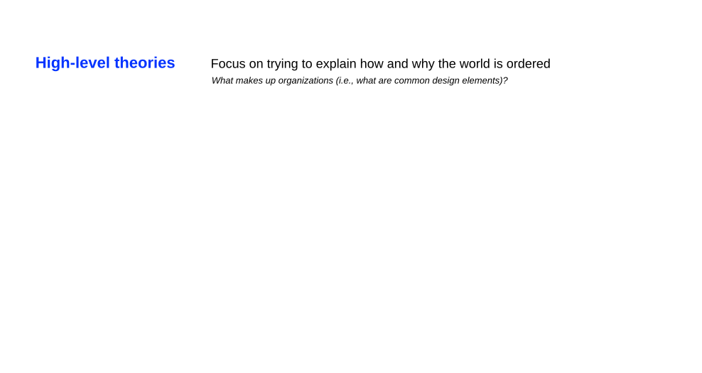
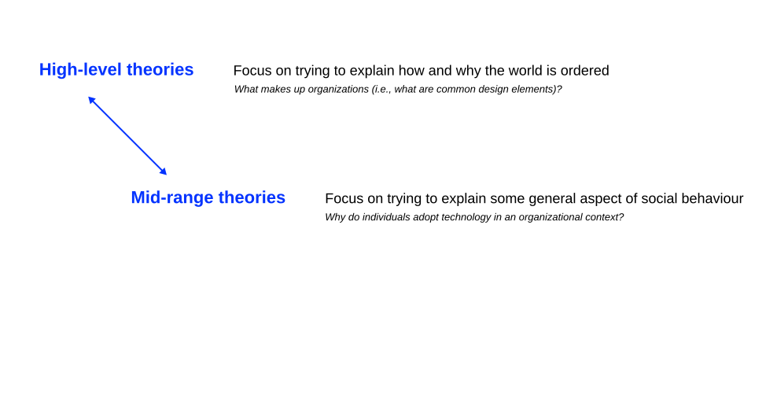
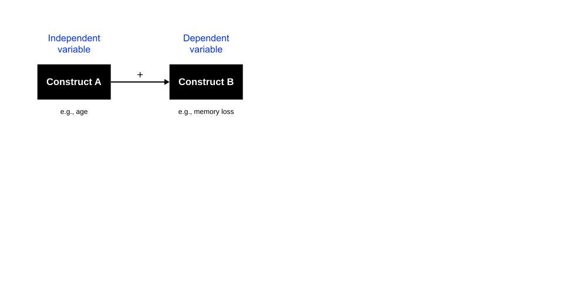
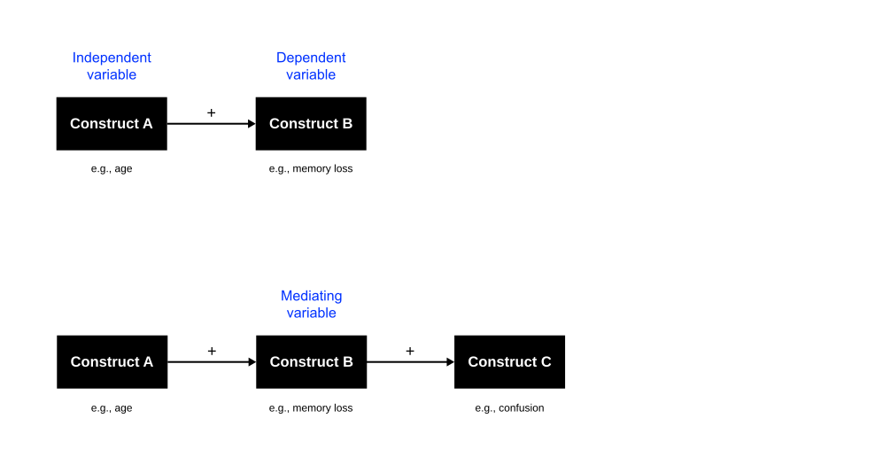

What is Theory
Research Project 1 (RP1) — U5
September 3, 2026
Visualization



Operationalization

Levels of Theory



Nomological Nets



Theoretical Basis
Theory of Reasoned Action (TRA), an established theory in psychology used to understand an individual’s behavior (Ajzen, 1985).

Technology Acceptance Model
The Technology Acceptance Model (TAM) (Davis, 1989) translates the key tenets of TRA into the IT acceptance domain, except for subjective norms.